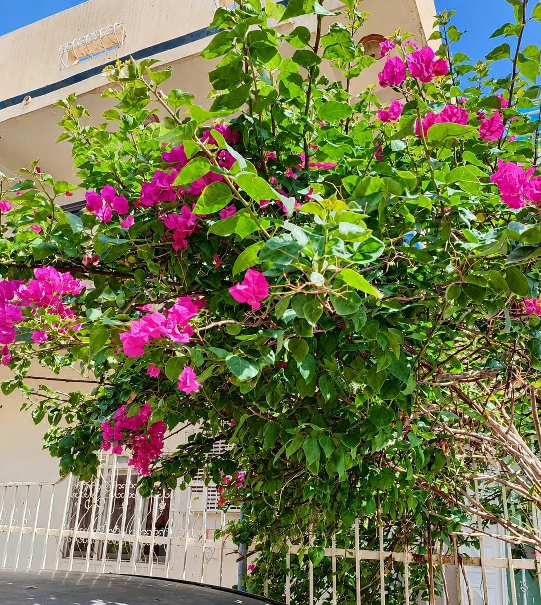
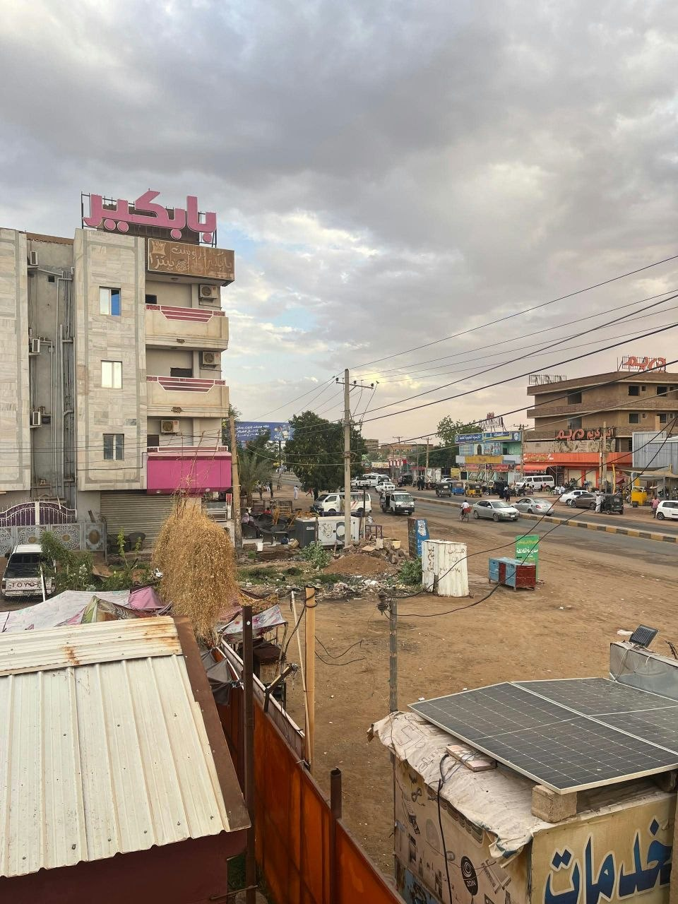

Beside my university study, I have two hobbies that I love very much. They make my life more beautiful and balanced.
I love cooking very much. I enjoy cooking salty dishes more, because I love trying new tastes and recipes. I also love making sweets sometimes, especially for my family. Cooking makes me happy and relaxed, and I feel proud when people enjoy my food.
I love photography. I love to document all the beautiful moments in my life, like outings, gatherings, and sitting with my family and my friends. I also love taking photos of streets, nature and the sky. I love the rain very much. I enjoy the rain time, I walk, I take photos, and I sit and pray. Photography helps me keep my beautiful memories.
Here are some photos I took by myself:


These are some of my favourite photos from my own photography.
These two hobbies help me to relax, to be creative, and to come back to my studies with new energy and a clear mind.